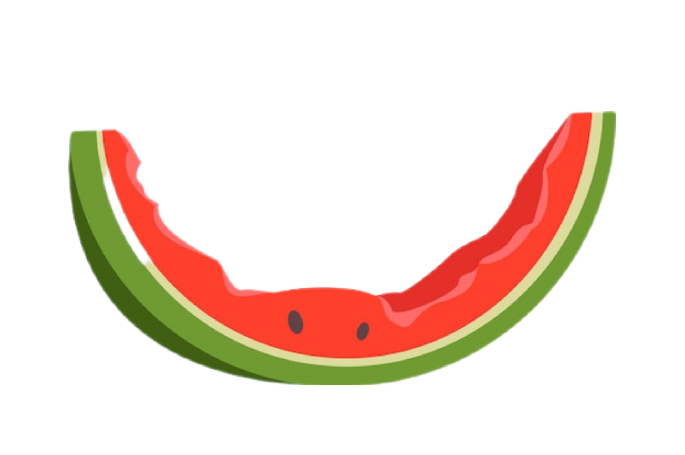
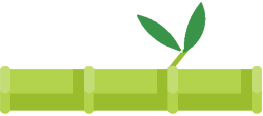
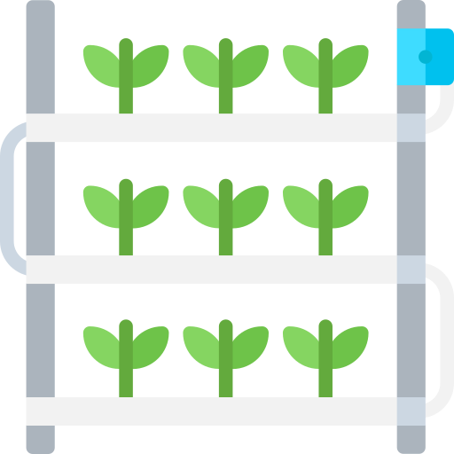
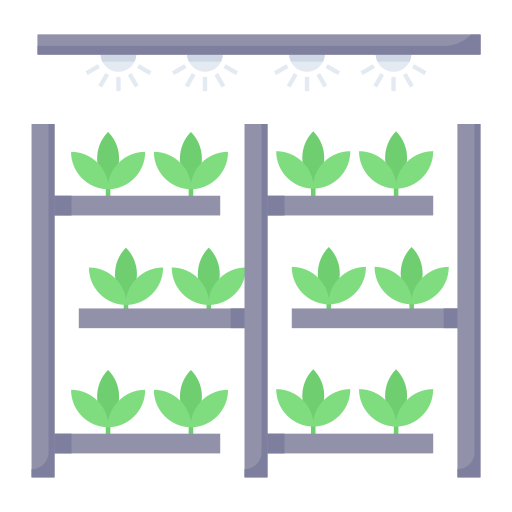
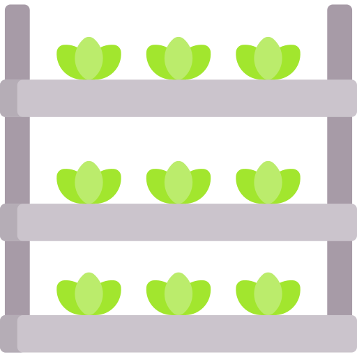
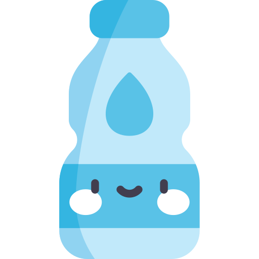
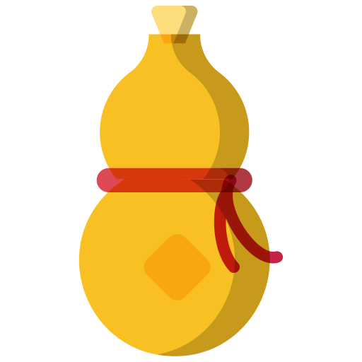
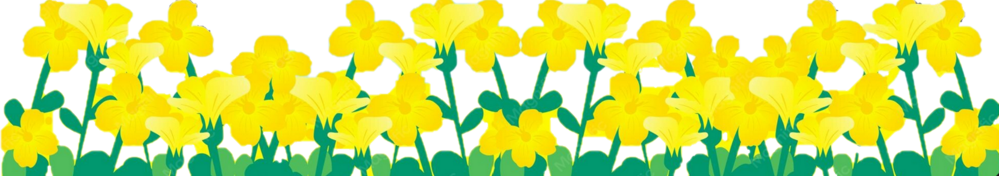
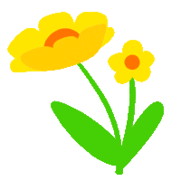

Hello! I am the Compost Pig, 堆肥猪 Duīféi Zhū!I love to go around sniffing out leftover fruits and vegetables (水果和蔬菜 shuǐguǒ hé shūcài)!If the food scrap has a certain level of water💧 (水 shuǐ) content, I gobble them up!Tiny helpful bugs and microbes break them down into rich, healthy soil. If I cannot find enough food scraps to eat, my bamboo leaves will curl up and turn brown!

堆肥duī féi
♻️

hydroponic (水耕法 shuǐ gēng fǎ) vertical farm




carbonated water (tànsuān shuǐ 碳酸水)

大福


Pig (猪Zhū) Principles 🐷 o i n k :
1. Do less， get more。
2. Make everything， use / eat everything。